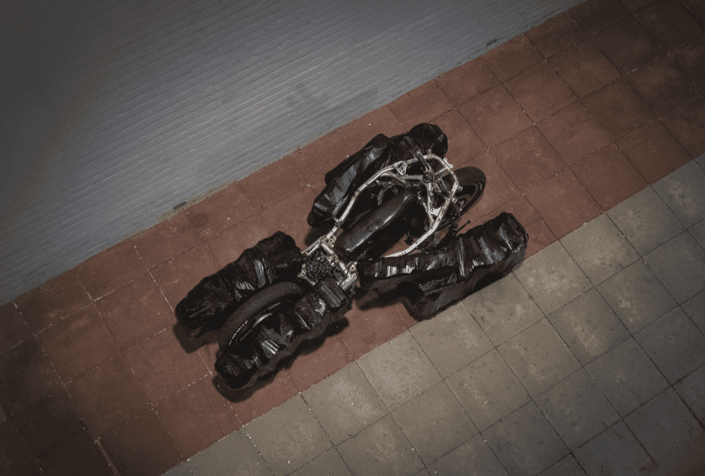
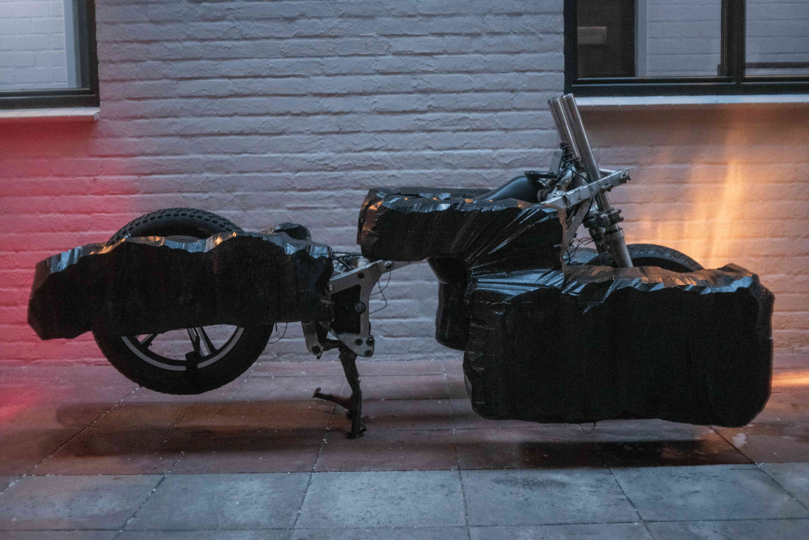
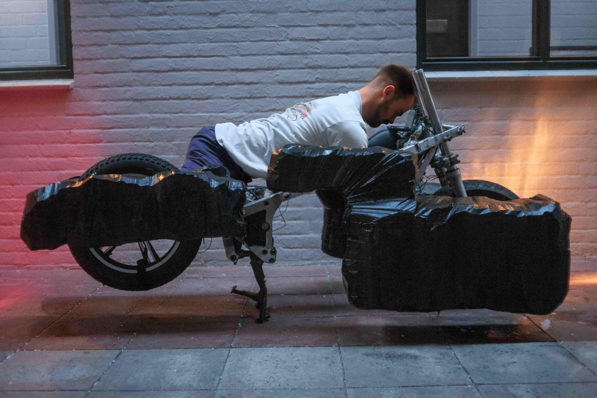
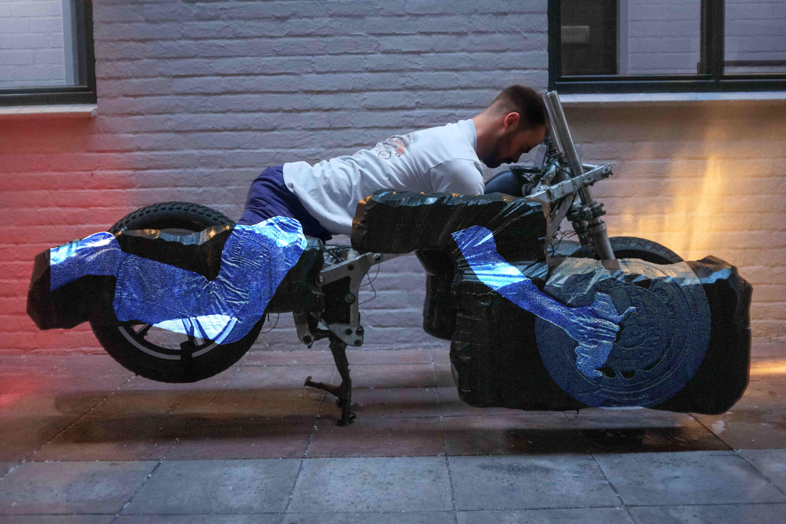
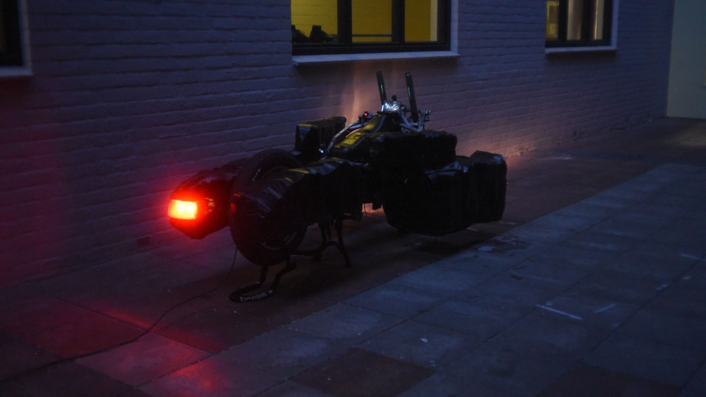
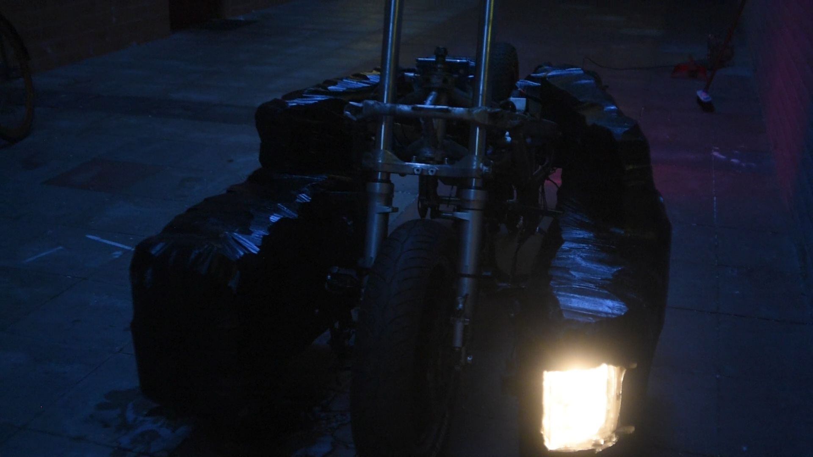
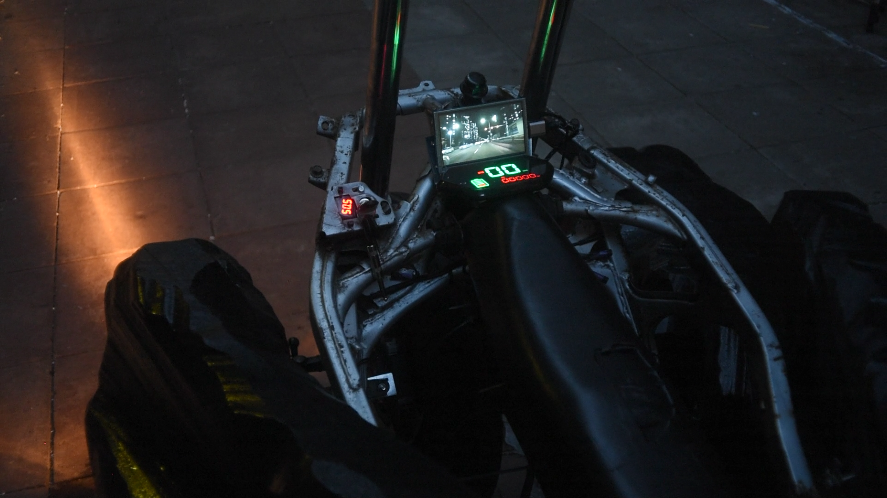

This project investigates whether algorithmic uncertainty can be used as a deliberate method for escaping design archetypes. It proposes and demonstrates a distinction between two fundamentally different kinds of generative uncertainty: aesthetic uncertainty, produced by image generators trained on cultural data, and geometric uncertainty, produced by structural solvers operating on physical constraints. This distinction changes where design thinking happens. It moves from steering outputs to constructing briefs. The electric motorcycle serves as the design case, chosen because the disappearance of the combustion engine removes the engineering logic that defined the shape of motorcycles for as long as they exist, yet most electric motorcycle on the market still looks the same. Using ANTON, an open-source topology optimisation plugin for Blender, the project generates motorcycle forms from body positions rather than vehicle geometry, treating the human body as the only remaining hard constraint. The process produces an exoskeleton-like prone form with interaction affordances that could not have been formulated through conventional design. The project contributes a theorised pixel-to-vector distinction, a documented studio process working with geometric uncertainty, and a set of open interaction questions that emerged from following the algorithm far enough that familiar categories stopped being useful.